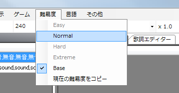

No lo habíamos mencionado, pero la dificultad en la que ha trabajado hasta ahora es Base, que no es ninguna de las cuatro dificultades (easy, normal, hard, extreme).
Como su nombre indica, Base sirve para crear la base de la partitura. El desarrollador prevé que se copie a otras dificultades y se cambien los tipos de marca, etc., para añadir dificultades.
Además, Base no se puede jugar, así que es necesario copiarla a alguna dificultad.
Copiemos la dificultad Base a la dificultad Normal.
Seleccione Dificultad → Copiar la dificultad actual.

Luego, en el cuadro combinado del diálogo, elija Normal y pulse OK.

En este punto solo se ha copiado, así que cambie de dificultad para editar la partitura en Normal.

Puede saber la dificultad actual haciendo clic en el menú Dificultad, o por el título de la ventana principal de PPDEditor, que aparece como "nombre de la partitura(Normal) - PPDEditor".
Tenga en cuenta que el historial, como deshacer, se pierde al cambiar de dificultad.
Siguiente